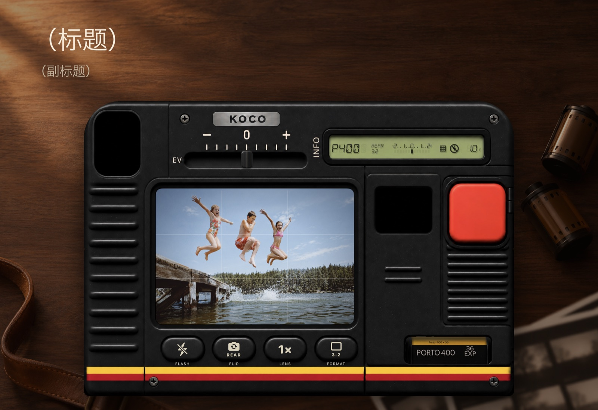
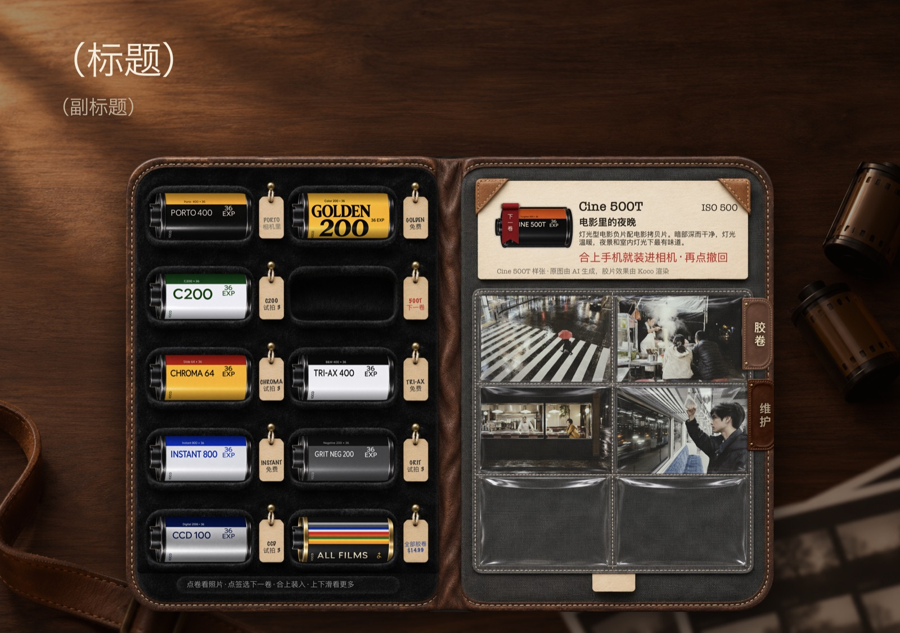

<title>Koco Duo 截图样稿</title>
<meta name="claude:viewport-fit-sides" content="cover">
<style>
:root{--bg:#f3efe6;--fg:#201c17;--muted:#6f675c;--line:#ddd5c6;--accent:#b23b1e}
@media (prefers-color-scheme:dark){:root:not([data-theme="light"]){--bg:#15130f;--fg:#ede7db;--muted:#9b9284;--line:#332e27;--accent:#ec7b52;color-scheme:dark}}
:root[data-theme="dark"]{--bg:#15130f;--fg:#ede7db;--muted:#9b9284;--line:#332e27;--accent:#ec7b52;color-scheme:dark}
body{background:var(--bg);color:var(--fg);font:16px/1.65 -apple-system,"PingFang SC",system-ui,sans-serif;padding-left:max(16px,env(safe-area-inset-left,0px));padding-right:max(16px,env(safe-area-inset-right,0px));padding-block:22px 48px}
main{max-width:900px;margin:0 auto}h1{font-size:22px;margin:0 0 4px}
.sub{color:var(--muted);font-size:14px;margin:0 0 18px;max-width:70ch}
figure{margin:0 0 22px}img{width:100%;height:auto;border-radius:10px;display:block;border:1px solid var(--line)}
figcaption{font-size:14px;color:var(--muted);margin-top:6px}
.tbl{overflow-x:auto}table{border-collapse:collapse;min-width:620px;font-size:14px}td,th{border-bottom:1px solid var(--line);padding:6px 8px;text-align:left;vertical-align:top}
</style>
<main>
<h1>Duo 截图样稿（标题留给你写）</h1>
<p class="sub">第一张“两个框”是我的错：拿来当外屏原图的其实是第一版做好的成图（带自己的框和标题，胶卷名也是旧的）。已改成直接按 Duo 外屏实际尺寸渲染的真外屏，现在只有一个框、胶卷名是新的。标题位置先放了占位，你写好 8 条（中文，英文也可以你写或我来译），在决定页这一项的补充里贴给我，我就做全部 8 张中英文。</p>
<figure><figcaption>第 1 张 · 外屏（已修正）</figcaption></figure>
<figure><figcaption>第 3 张 · 内屏</figcaption></figure>
<h2 style="font-size:18px">8 张各自要讲的功能</h2>
<div class="tbl"><table><tr><th>#</th><th>这张画面</th><th>标题 / 副标题</th></tr><tr><td>1</td><td>外屏取景就是胶片效果（实时）</td><td>（你写）</td></tr><tr><td>2</td><td>半折手机：下半屏变腰平取景器，有水平气泡和快门键</td><td>（你写）</td></tr><tr><td>3</td><td>展开挑一卷，完全合上就装进相机</td><td>（你写）</td></tr><tr><td>4</td><td>合着手机也能打开外屏的胶卷仓换卷</td><td>（你写）</td></tr><tr><td>5</td><td>三卷免费，其他每卷可免费试拍几张</td><td>（你写）</td></tr><tr><td>6</td><td>锁屏按相机控制键直接打开</td><td>（你写）</td></tr><tr><td>7</td><td>原图和胶片效果做成短视频分享</td><td>（你写）</td></tr><tr><td>8</td><td>照片只存在手机里，不用账号、不上传</td><td>（你写）</td></tr></table></div>
</main>
